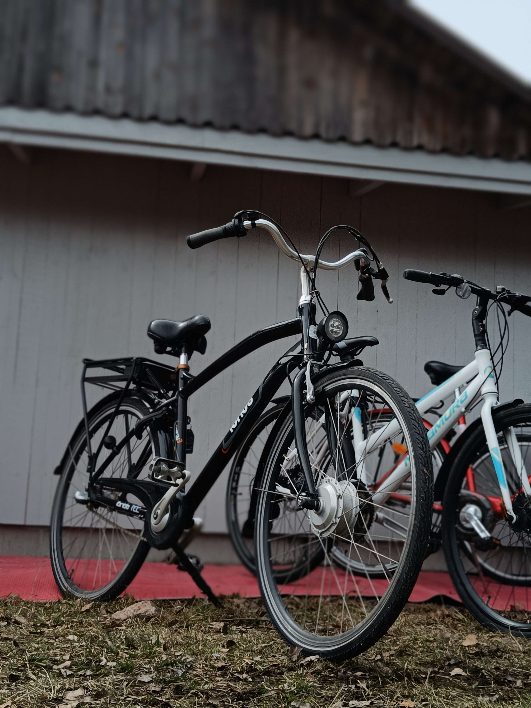

AVOINNA PÄIVITTÄIN KLO 10-17
Vuokraa pyörä netin kautta
AVOINNA PÄIVITTÄIN klo 10-17
OPEN DAILY KLO 10-17
AVOINNA PÄIVITTÄIN KLO 10-17
OPEN DAILY KLO 10-17
Vuokraa pyörä netin kautta
Rent a bike online
Terve, olemme veljekset Raumalta.
Olemme mukana vuoden 2024 Pitsikaupungin kesäyrittäjissä. Perustamamme 4h-yritys vuokraa polkupyöriä Wanhan Rauman Savilassa matkailuneuvonnan edustalla Savilankatu 8. Tavoitteenamme on tarjota sekä paikallisille asukkaille että turisteille helppo ja mukava tapa liikkua kaupungissa pyörällä.
Meillä on vuokrattavana seitsemän erilaista pyörää, joita pystyt tutkimaan enemmän Pyörät -osiosta.
Meiltä pystyt vuokraamaan pyörän netin kautta tai olemalla meihin yhteydessä puhelimitse tai sähköpostin kautta (Yhteystiedot). Pyörä pitää vuokrata puolituntia etukäteen netistä, jos emme ole paikan päällä.
Pyöräily on loistava tapa tutustua Rauman kauniisiin maisemiin ja historialliseen keskustaan. Olitpa sitten matkailija tai paikallinen asukas, pyöräillen voit kokea kaupungin ainutlaatuisella tavalla ja liikkua vapaasti juuri sinne, minne haluat.
Tervetuloa nauttimaan pyöräilystä Rauman idyllisissä maisemissa! Ota rohkeasti yhteyttä, jos sinulla on kysyttävää tai tarvitset lisätietoja pyörien vuokraamisesta.
Tästä löydät vielä Ohjeet vuokraamiseen, vuokrausehdot ja Tietosuojaselosteen
Hello, we are brothers from Rauma.
We are participating in the 2024 Pitsikaupunki Summer Entrepreneurs. Our 4-hour company rents bicycles in front of the tourist information office in Old Rauma's Savila Savilankatu 8. Our goal is to provide both locals and tourists an easy and enjoyable way to explore the city by bike.
We have seven different bikes available for rent, which you can explore more in the Bikes section.
You can rent a bike from us online or by contacting us by phone or email (Contact). The bike must be reserved online at least half an hour in advance if we are not on site.
Cycling is a great way to explore the beautiful landscapes and historical center of Rauma. Whether you're a tourist or a local resident, cycling allows you to experience the city in a unique way and move freely wherever you want.
Welcome to enjoy cycling in the idyllic landscapes of Rauma! Feel free to contact us if you have any questions or need more information about renting bikes.
Here you can find Instructions for renting, rental terms, and Privacy policy.
Terässiipi

Nopsa

Helkama

Ibrido
Madison

Carraro

Nakamura

Vuokraa pyörä netistä!
Rent a bike online!
Osoite  :Savilankatu 8, 26100 Rauma
:Savilankatu 8, 26100 Rauma
Address :Savilankatu 8, 26100 Rauma
Puhelinnumerot: 044 974 6457 (Valtteri) / 044 978 7610 (Riku)
Phone numbers: 044 974 6457 (Valtteri) / 044 978 7610 (Riku)
Sähköposti: wrpyoravuokraamo@gmail.com
Email: wrpyoravuokraamo@gmail.com
Mikäli haluat vuokrata pyörän pidemmäksi aikaa, ota meihin yhteyttä sähköpostin kautta
If you are interested in renting a bike for a longer duration, contact us via gmail